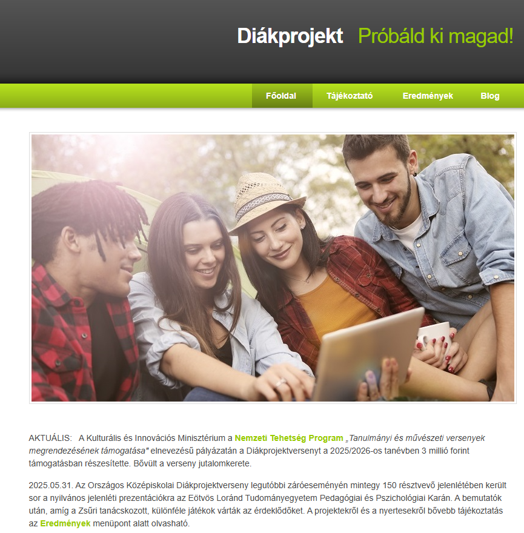
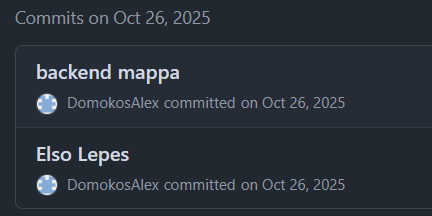
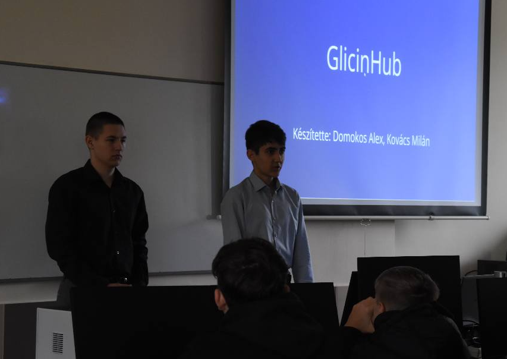
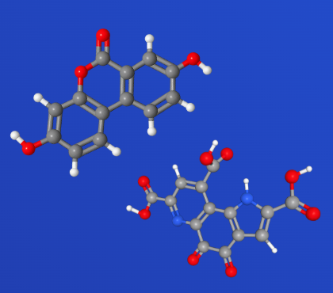
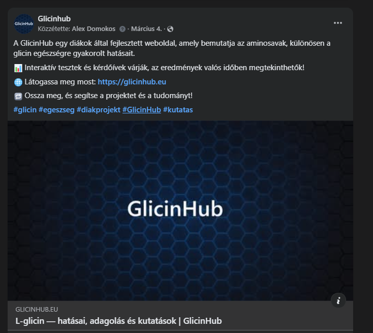
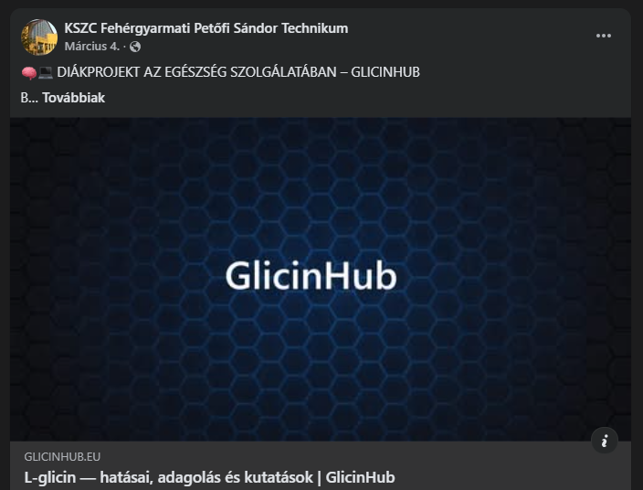
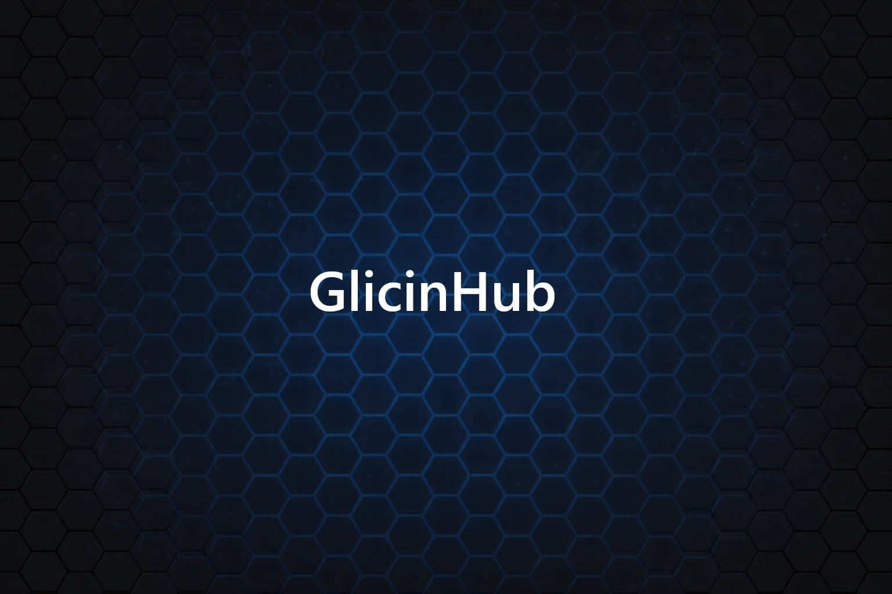
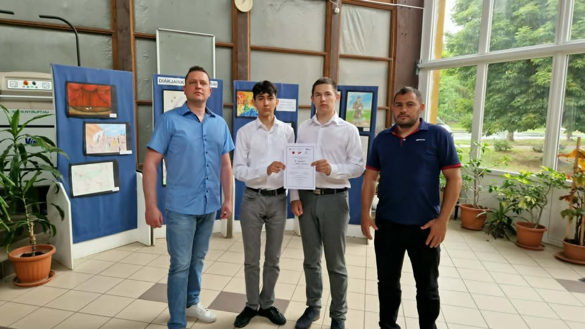

A GlicinHub története
2025:
Szeptember
Tudomást szereztünk a Diákprojekt
versenyről és
azonnal jelentkeztünk.
Az első megbeszéléseken számos témát ötleteltünk: egészségtudomány,
környezetvédelem, technológia és táplálkozástudomány területéről
egyaránt felmerültek lehetséges irányok. Hosszas egyeztetés után
fokozatosan egyetlen fókuszpont felé közeledtünk, amelyről úgy éreztük,
hogy egyszerre tudományosan megalapozott, közérthető és valódi
társadalmi hasznot hordoz magában.

Október
Véglegesen meghatároztuk a projekt témáját: az L-glicin aminosav hatásainak kutatása és széles körű terjesztése. A választás mögött az a felismerés állt, hogy a glicin, bár az emberi szervezet egyik legfontosabb aminosava szinte teljesen ismeretlen a köztudatban.
A csapatmunka megszervezéséhez létrehoztuk a projekt Trello-tábláját a feladatok ütemezéséhez, valamint a közös GitHub repozitóriumt a forráskód verziókövethető tárolásához. Ez volt az első commit mérföldköve.
A fejlesztés két párhuzamos szálon indult el:
-
Tudományos kutatás: szakirodalom feltérképezése (PubMed, klinikai tanulmányok) az L-glicin hatásairól.
-
Weboldal fejlesztés: az alapstruktúra felépítése Bootstrap 5 keretrendszer és egyedi CSS stílusok segítségével, hogy a közelgő iskolai nyílt napra már bemutatható állapotban legyen.

November
A weboldal és a mögötte álló kutatás
bemutatható
állapotba érett
az iskolai nyílt napra. A látogatók megismerhették az L-glicin
szerepét a szervezetben, a visszajelzések egyöntetűen pozitívak
és biztatóak voltak - sokan nem is hallottak korábban erről az
aminosavról.
A nyílt nap tapasztalatai megerősítették, hogy jó irányba haladunk:
a témának valódi érdeklődési potenciálja van. Ezt követően a
kutatás és a webfejlesztés fokozott ütemben folytatódott.

December
Áttörés a kutatásban. Mélyebb szakirodalmi elemzések során rátaláltunk az L-glicin természetes kiegészítőire: a PQQ-ra (Pirrolochinolin-chinon) és az Urolithin-A-ra. Ezek az anyagok a hipotézisünk szerint szinergikusan támogatják az L-glicin hatásait a sejtszintű megújulásban és a mitokondriális funkcióban.
A weboldalon megjelentek a glicin hatásainak tudományosan alátámasztott, részletes leírásai:
-
Alvásminőség és cirkadián ritmus javítása
-
Idegrendszer és kognitív funkció támogatása
-
Anyagcsere és vércukorszint-szabályozás
-
Kollagénszintézis és bőr- illetve ízületegészség
-
Máj méregtelenítő folyamatainak segítése

2026:
Január
Az oldal felkészítése az élő internetes megjelenésre. Ebben a hónapban zajlott a domain regisztráció (glicinhub.eu), a tárhelyszolgáltató kiválasztása és a szerver beállítása.
Párhuzamosan elvégeztük a keresőoptimalizálást (SEO):
-
Meta leírások és Open Graph-adatok beállítása
-
Strukturált schema.org jelölések hozzáadása
-
Canonical URL-ek meghatározása
-
Sitemap és robots.txt elkészítése
-
Google Analytics integrációja a látogatottság mérésére
Megkezdtük a közösségi médiajelenlétet is a glicin ismeretének minél szélesebb körű terjesztése érdekében.

Február
Az oldal látogatottsága napról napra növekedett, amit a beépített statisztikai rendszer is igazolt. A figyelemfelkeltő tartalmaknak és a közösségi médián való aktív megjelenésnek köszönhetően egyre több látogató talált rá a weboldalra.
Az oldalon ebben az időszakban két interaktív funkció is elindult:
-
Kérdőív: felmérés a glicin ismertségéről és a felhasználók életmódjáról, amelynek statisztikái élőben is megtekinthetők az oldalon.
-
Glicin Teszt (ajánlásrendszer): egy rövid kérdéssor alapján személyre szabott ajánlást kapnak a látogatók arról, hogy számukra miben lehet hasznos a glicin-kiegészítés.
Az oldal szerepelt egy projektnapon is, ahol a fejlesztési folyamatot és az eredményeket mutattuk be.

Március
Az iskola hivatalosan is bemutatta és elismerte a GlicinHub projektet. Ez egy fontos mérföldkő volt a csapatunk számára.
Elvégeztük az oldal utolsó simításait, hogy a felhasználói élmény még gördülékenyebb legyen:
-
Animációk finomhangolása (AOS - Animate On Scroll könyvtár)
-
Mobilnézet javítása, reszponzív elrendezés tökéletesítése
-
Oldalak közötti navigáció és footer véglegesítése
-
Tartalmi kiegészítések a Társelemek (PQQ & Urolithin-A) és a Tudományos háttér aloldalakon

Április
Ebben az időszakban a projekt fejlesztése nem új funkciók hozzáadására, hanem a teljes rendszer véglegesítésére és a versenyre való felkészülésre fókuszált. A csapat áttekintette és rendszerezte a korábbi eredményeket, ellenőrizte az oldal stabil működését, valamint elvégezte a szükséges finomhangolásokat.
Párhuzamosan megkezdődött a Diákprojekt versenyre való intenzív felkészülés, valamint az érettségi vizsgákra való felkészülés is, amely jelentős idő- és figyelemráfordítást igényelt.
Főbb tevékenységek:
-
Az előadás struktúrájának kidolgozása
-
A projekt fő elemeinek összefoglalása
-
A bemutató vizuális és szakmai anyagainak véglegesítése
-
Az érettségire való felkészülés miatti időbeosztás átszervezése
Ebben a hónapban a hangsúly a meglévő rendszer lezárásán, valamint a sikeres prezentáció és vizsgák előkészítésén volt.

Május
A GlicinHub bemutatásra kerül a zsűri és a közönség előtt.
Az Országos Diákprojekt Verseny döntőjében, a több mint 100 induló csapatot felsorakoztató verseny 33 csapatból álló országos mezőnyében iskolánk két szoftverfejlesztő és -tesztelő tanulója, DOMOKOS ALEX és KOVÁCS MILÁN 12.b osztályos tanulók a GlicinHub elnevezésű projektjükkel országos 3. helyezést értek el, valamint a Neumann János Számítógéptudományi Társaság (NJSZT) különdíjában részesültek.

Köszönetnyilvánítás
Ezúton szeretnénk köszönetet mondani mindazoknak, akik bármilyen módon hozzájárultak a projekt megvalósításához.
Külön köszönet tanárainknak a szakmai iránymutatásért és támogatásért, valamint azoknak, akik visszajelzéseikkel segítették a projekt fejlődését.
Köszönjük továbbá az iskolának a lehetőséget és a környezetet, amelyben a GlicinHub projekt megvalósulhatott.
Végül köszönet minden látogatónak és résztvevőnek, akik időt szántak a weboldal kipróbálására és a kérdőív kitöltésére, hozzájárulva a kutatási adatgyűjtéshez.